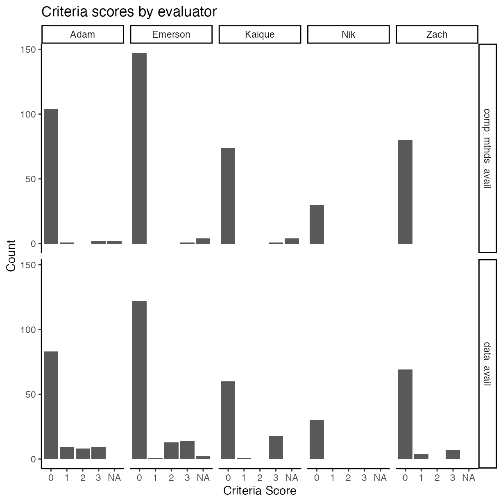
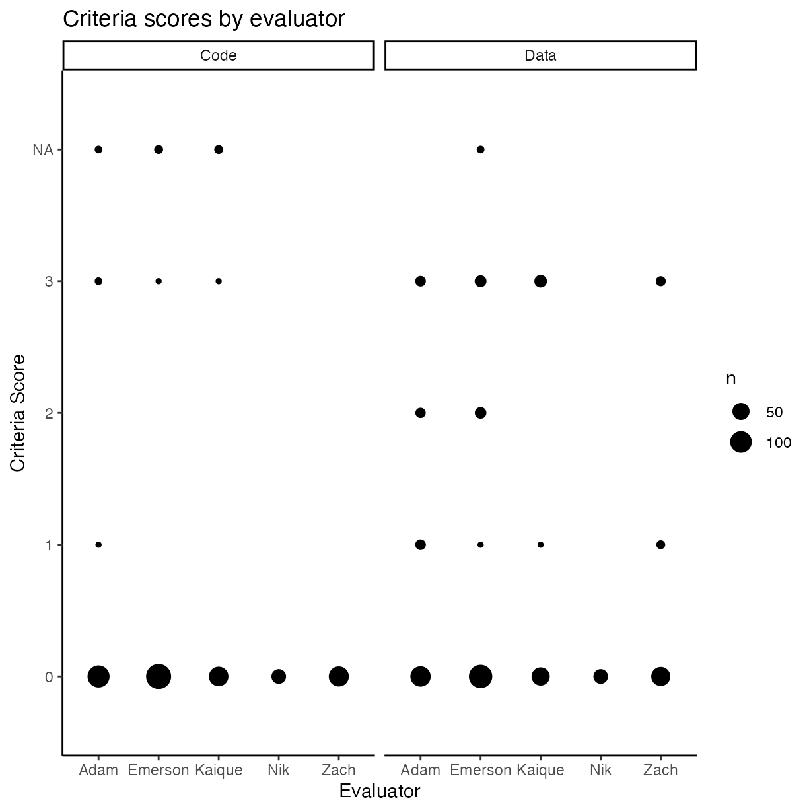
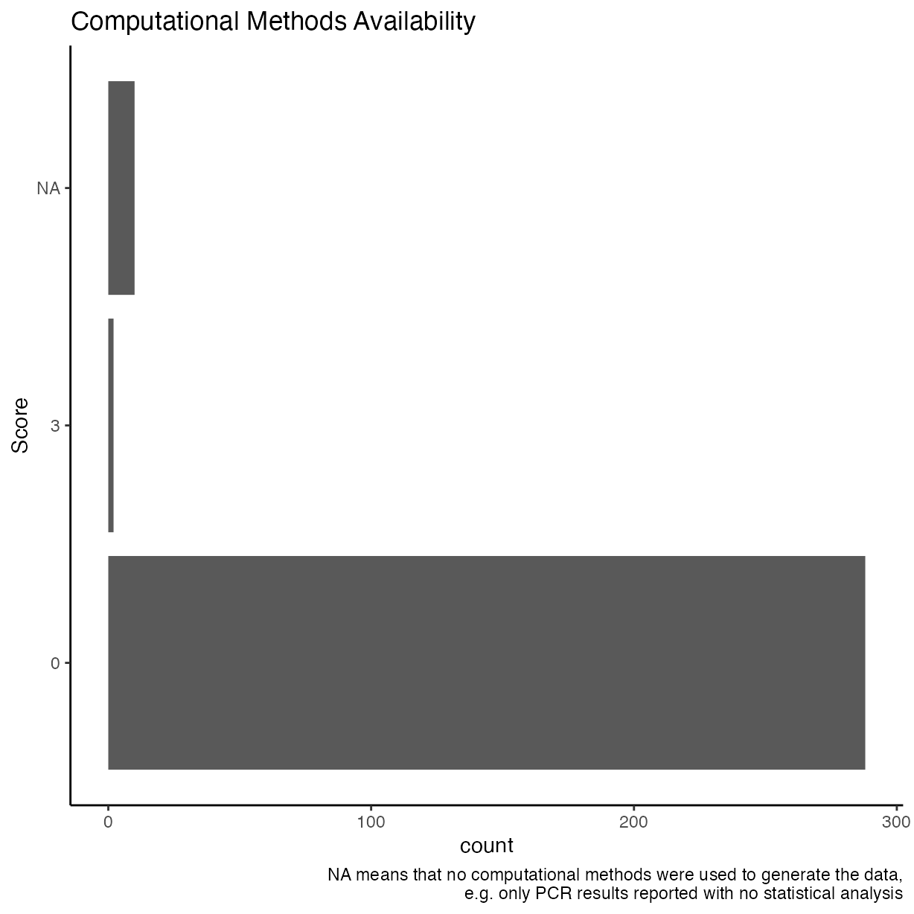
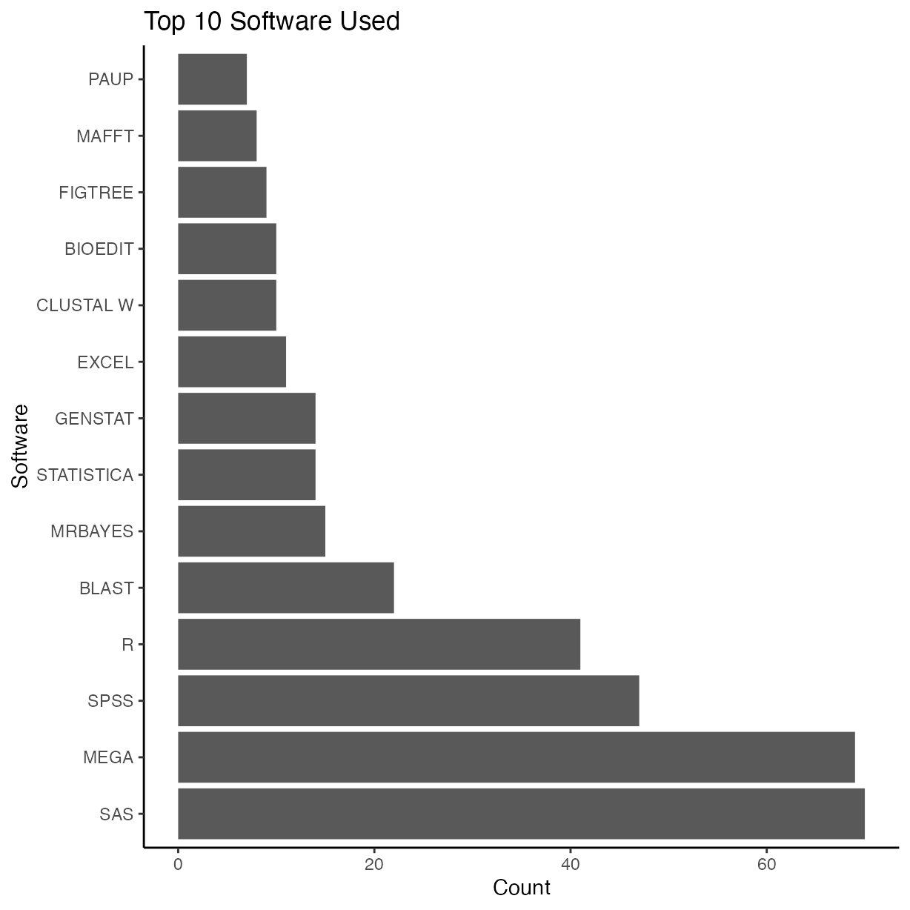
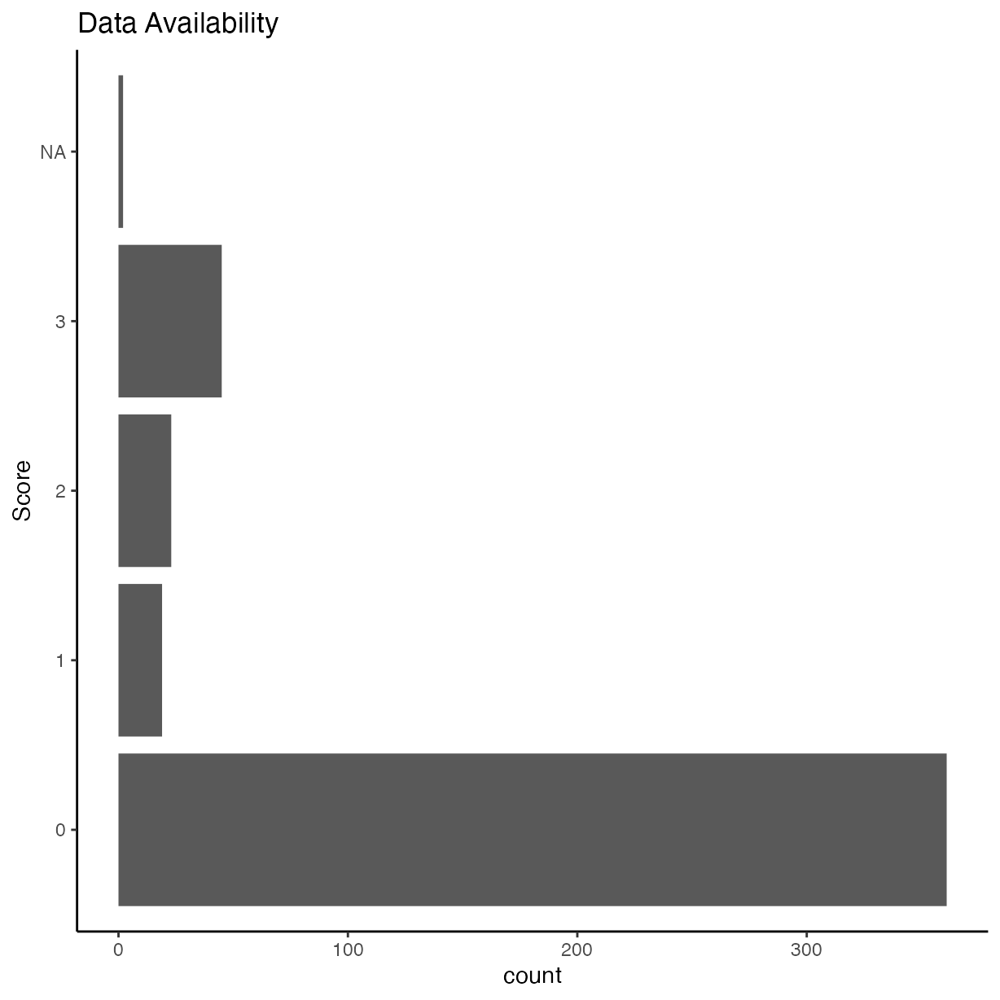
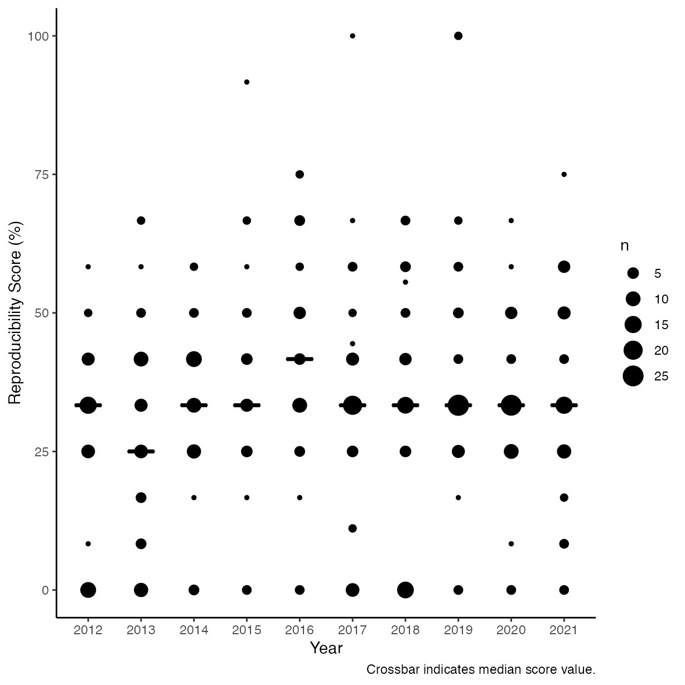
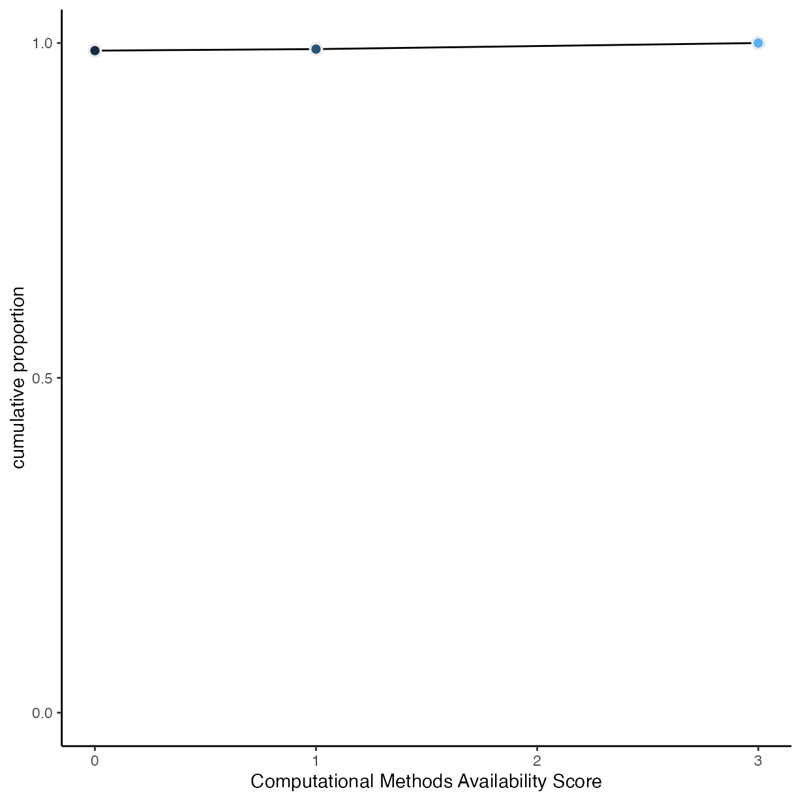
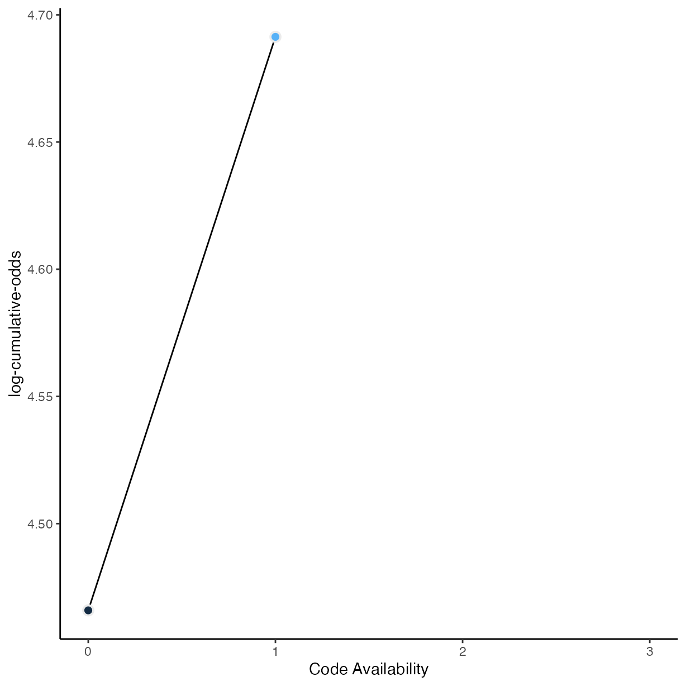
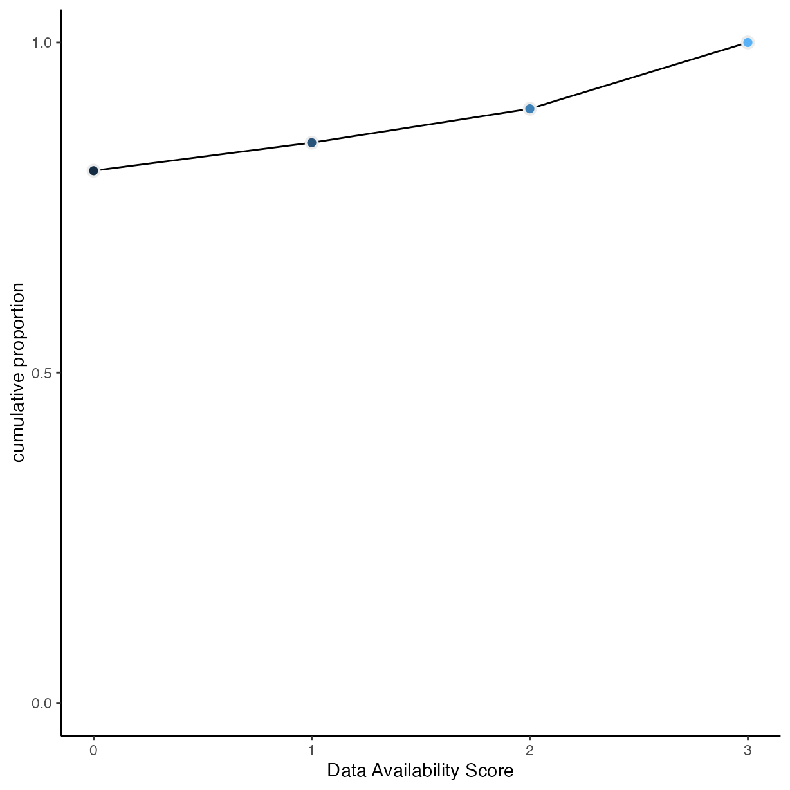
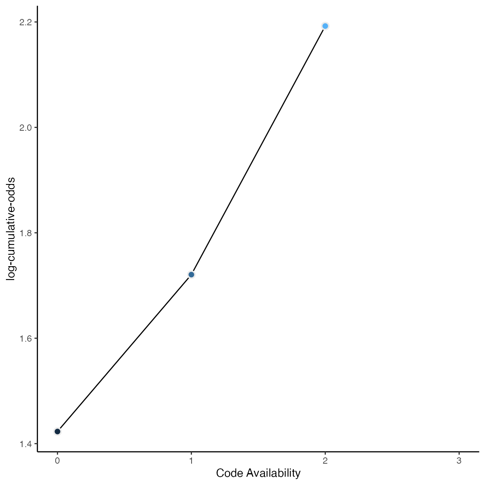

vignettes/d_visualisation.Rmd
d_visualisation.RmdThis vignette documents a simple visualisation and tabulation of the data gathered from surveying 21 journals and 450 articles in the field of plant pathology for their openness and reproducibility.
Load libraries used and setting the ggplot2 theme for the document.
library("tidyverse")
#> ── Attaching packages ─────────────────────────────────────── tidyverse 1.3.2 ──
#> ✔ ggplot2 3.3.6 ✔ purrr 0.3.5
#> ✔ tibble 3.1.8 ✔ dplyr 1.0.10
#> ✔ tidyr 1.2.1 ✔ stringr 1.4.1
#> ✔ readr 2.1.3 ✔ forcats 0.5.2
#> ── Conflicts ────────────────────────────────────────── tidyverse_conflicts() ──
#> ✖ dplyr::filter() masks stats::filter()
#> ✖ dplyr::lag() masks stats::lag()
library("janitor")
#>
#> Attaching package: 'janitor'
#>
#> The following objects are masked from 'package:stats':
#>
#> chisq.test, fisher.test
library("pander")
library("Reproducibility.in.Plant.Pathology")
theme_set(theme_classic())
rrpp <- import_notes()
rrpp %>%
mutate(
comp_mthds_avail = as.numeric(as.character(comp_mthds_avail)),
data_avail = as.numeric(as.character(data_avail))
) %>%
pivot_longer(cols = c("comp_mthds_avail",
"data_avail")) %>%
ggplot(aes(x = as.factor(value))) +
geom_bar() +
ylab("Count") +
xlab("Criteria Score") +
ggtitle("Criteria scores by evaluator") +
facet_grid(name ~ assignee)
rrpp %>%
mutate(
comp_mthds_avail = as.numeric(as.character(comp_mthds_avail)),
data_avail = as.numeric(as.character(data_avail))
) %>%
pivot_longer(cols = c("comp_mthds_avail",
"data_avail")) %>%
ggplot(aes(y = as.factor(value), x = assignee)) +
geom_count() +
ylab("Criteria Score") +
xlab("Evaluator") +
ggtitle("Criteria scores by evaluator") +
facet_wrap(name ~ .,
labeller = labeller(name =
c(
"comp_mthds_avail" = "Code",
"data_avail" = "Data"
)))
Were the computational methods, scripts, source code, etc., made available?
ggplot(rrpp, aes(y = as.factor(comp_mthds_avail))) +
geom_bar() +
ggtitle("Computational Methods Availability") +
ylab("Score") +
labs(caption = "NA means that no computational methods were used to generate the data,\ne.g. only PCR results reported with no statistical analysis")
Count and sort top 10 software packages cited. There are likely others that are used, but they have not been properly cited or listed by the authors.
First create a tidy data frame of the data by unnesting software used as in many cases multiple software packages were used, so will end up with multiple rows for same article, one for each software.
rrpp_software <-
rrpp %>%
transform(software_used = strsplit(software_used, ",")) %>%
unnest(software_used) %>%
mutate(software_used = trimws(software_used)) %>%
mutate(software_used = toupper(software_used)) # convert all to uppercase to standardiseNow graph the top ten software packages used.
tab <- table(rrpp_software$software_used)
tab_s <- as.data.frame(sort(tab))
tab_s <-
tab_s %>%
arrange(desc(Freq)) %>%
filter(Freq %in% head(unique(Freq), 10)) %>%
rename("Software" = "Var1", "Frequency" = "Freq")
ggplot(tab_s, aes(y = Software, x = Frequency)) +
geom_bar(stat = "identity") +
ggtitle("Top 10 Software Used") +
xlab("Count") +
ylab("Software")
Were the data made readily available?
ggplot(rrpp, aes(y = as.factor(data_avail))) +
geom_bar() +
ggtitle("Data Availability") +
ylab("Score")
rrpp %>%
pivot_longer(cols = c("comp_mthds_avail", "data_avail")) %>%
ggplot(aes(x = year,
y = value)) +
geom_count() +
ylab("Score") +
xlab("Year") +
facet_grid(name ~ .)
rrpp %>%
group_by(comp_mthds_avail) %>%
drop_na(comp_mthds_avail) %>%
count() %>%
mutate(pr_k = n / nrow(drop_na(rrpp, comp_mthds_avail))) %>%
ungroup() %>%
mutate(cum_pr_k = cumsum(pr_k)) %>%
ggplot(aes(x = as.numeric(as.character(comp_mthds_avail)), y = cum_pr_k,
fill = as.numeric(as.character(comp_mthds_avail)))) +
geom_line() +
geom_point(shape = 21,
colour = "grey92",
size = 2.5,
stroke = 1) +
scale_y_continuous("cumulative proportion", breaks = c(0, .5, 1)) +
scale_fill_gradient() +
coord_cartesian(ylim = c(0, 1)) +
theme(legend.position = "none") +
xlab("Computational Methods Availability Score")
# McElreath's convenience function from page 335
logit <- function(x) log(x / (1 - x))
rrpp %>%
group_by(comp_mthds_avail) %>%
drop_na(comp_mthds_avail) %>%
count() %>%
mutate(pr_k = n / nrow(drop_na(rrpp, comp_mthds_avail))) %>%
ungroup() %>%
mutate(cum_pr_k = cumsum(pr_k)) %>%
filter(comp_mthds_avail < 3) %>%
ggplot(aes(
x = as.numeric(as.character(comp_mthds_avail)),
y = logit(cum_pr_k),
fill = as.numeric(as.character(comp_mthds_avail))
)) +
geom_line() +
geom_point(
shape = 21,
colour = "grey92",
size = 2.5,
stroke = 1
) +
coord_cartesian(xlim = c(0, 3)) +
ylab("log-cumulative-odds") +
xlab("Code Availability") +
scale_fill_gradient() +
theme(legend.position = "none")
rrpp %>%
group_by(data_avail) %>%
drop_na(data_avail) %>%
count() %>%
mutate(pr_k = n / nrow(drop_na(rrpp, data_avail))) %>%
ungroup() %>%
mutate(cum_pr_k = cumsum(pr_k)) %>%
ggplot(aes(x = as.numeric(as.character(data_avail)), y = cum_pr_k,
fill = as.numeric(as.character(data_avail)))) +
geom_line() +
geom_point(shape = 21,
colour = "grey92",
size = 2.5,
stroke = 1) +
scale_y_continuous("cumulative proportion", breaks = c(0, .5, 1)) +
scale_fill_gradient() +
coord_cartesian(ylim = c(0, 1)) +
theme(legend.position = "none") +
xlab("Data Availability Score")
rrpp %>%
group_by(data_avail) %>%
drop_na(data_avail) %>%
count() %>%
mutate(pr_k = n / nrow(drop_na(rrpp, data_avail))) %>%
ungroup() %>%
mutate(cum_pr_k = cumsum(pr_k)) %>%
filter(data_avail < 3) %>%
ggplot(aes(
x = as.numeric(as.character(data_avail)),
y = logit(cum_pr_k),
fill = as.numeric(as.character(data_avail))
)) +
geom_line() +
geom_point(
shape = 21,
colour = "grey92",
size = 2.5,
stroke = 1
) +
coord_cartesian(xlim = c(0, 3)) +
ylab("log-cumulative-odds") +
xlab("Code Availability") +
scale_fill_gradient() +
theme(legend.position = "none")
rrpp_journals <- tabyl(rrpp, journal)[, -3]
names(rrpp_journals) <- c("Journal", "n")
pander(rrpp_journals)| Journal | n |
|---|---|
| Australasian Plant Pathology | 11 |
| Canadian Journal of Plant Pathology | 19 |
| Crop Protection | 23 |
| European Journal of Plant Pathology | 19 |
| Forest Pathology | 18 |
| Journal of General Plant Pathology | 24 |
| Journal of Phytopathology | 19 |
| Journal of Plant Pathology | 23 |
| Molecular Plant Pathology | 29 |
| Molecular Plant-Microbe Interactions | 22 |
| Nematology | 16 |
| Physiological and Molecular Plant Pathology | 24 |
| Phytoparasitica | 23 |
| Phytopathologia Mediterranea | 20 |
| Phytopathology | 28 |
| Plant Disease | 24 |
| Plant Health Progress | 16 |
| Plant Pathology | 30 |
| Revista Mexicana de Fitopatología | 19 |
| Tropical Plant Pathology | 18 |
| Virology Journal (Plant Viruses Section) | 25 |